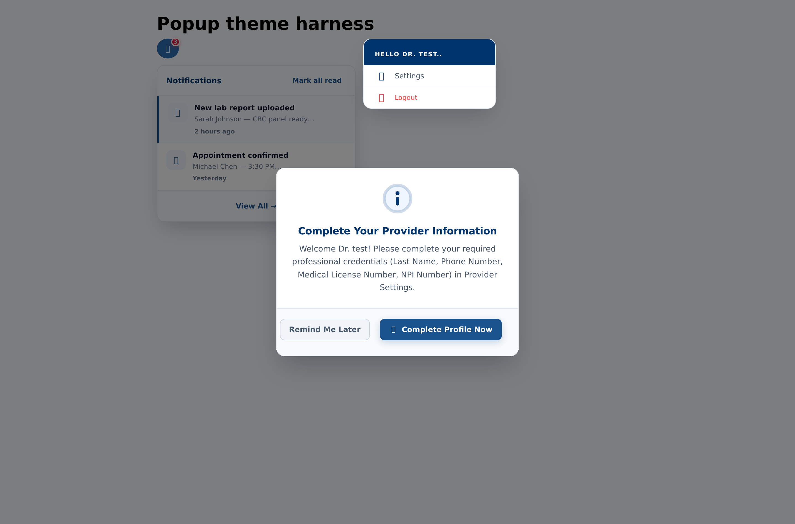
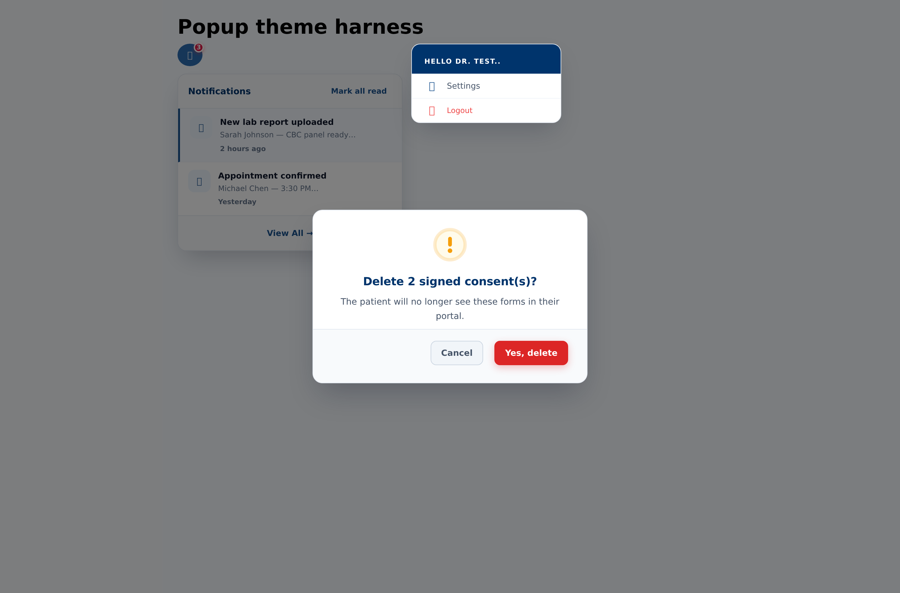
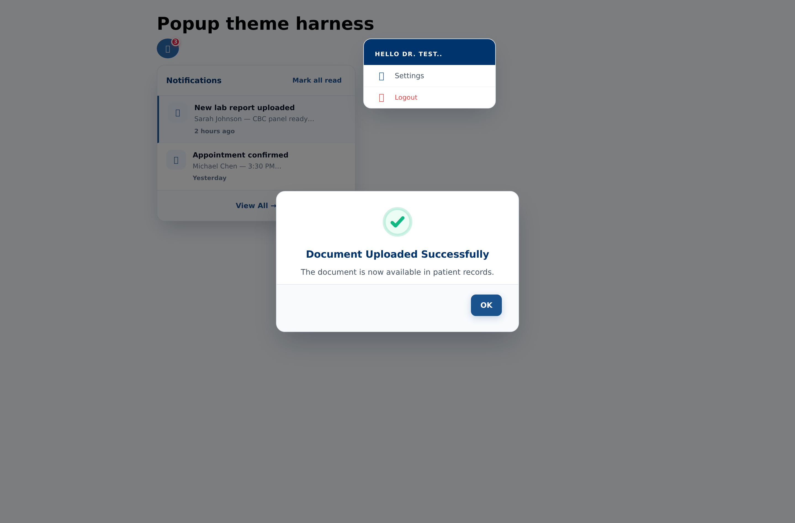
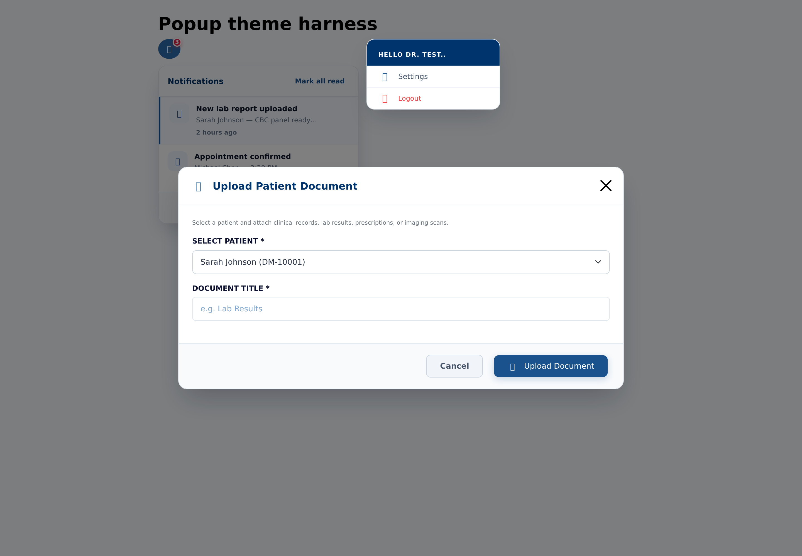
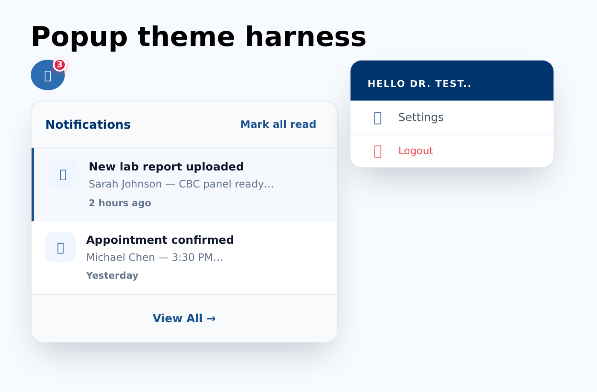
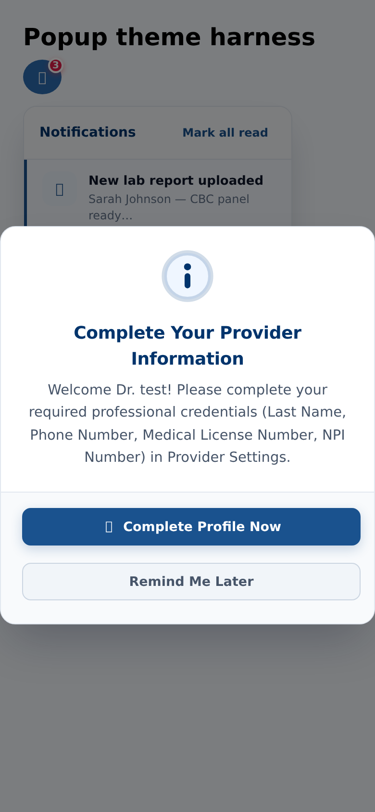
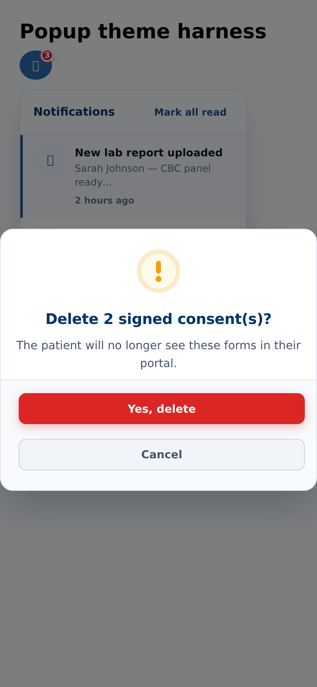
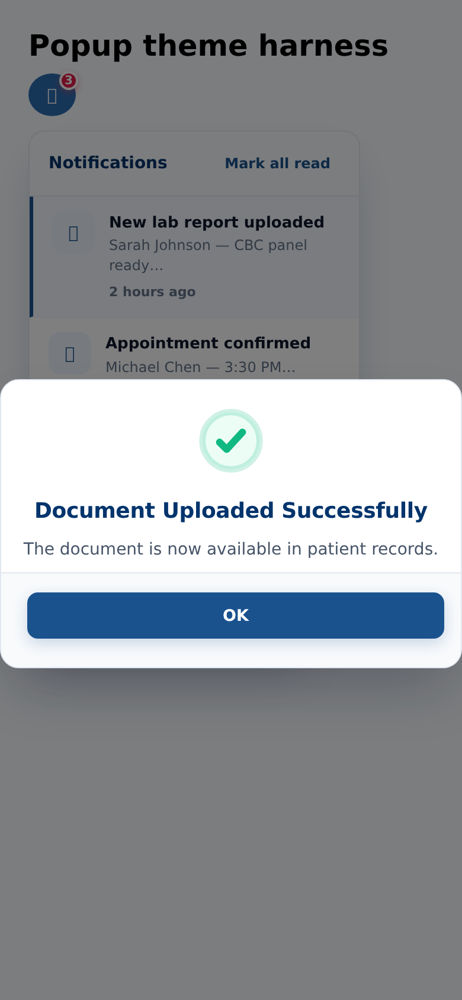
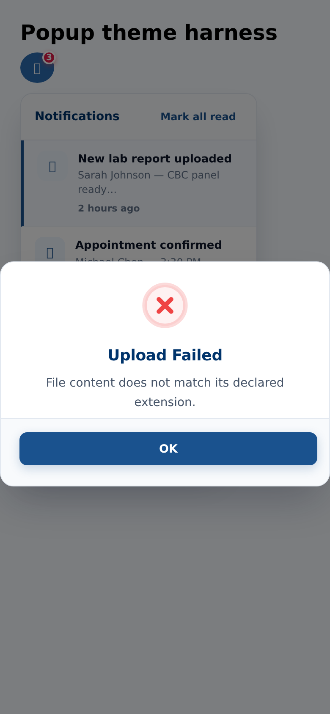

Task 6: doctor aur patient dashboard ke saare dialogs, alerts, toasts, notification dropdown aur profile dropdown ek hi theme palette par laaye — button colours, icon colours, borders aur radius sab consistent.
| Popup | Pehle | Ab |
|---|---|---|
| Confirm button (har alert) | drift Call sites 14 different hex bhej rahe the —
#2C6CB1 (37×), #2563eb, #3b82f6, #00A896,
#6c757d, #dc3545… Isliye har popup ka blue/red thoda alag dikhta
tha. |
fixed Stylesheet se ek hi navy
#1A528E (hover #00346C); call sites ka inline colour override ho
jaata hai. |
| Info / question icon | off-brand Info icon #00346C tha par question icon
purple #6366F1. |
fixed Dono brand navy; success/warning/error semantic hi rahe (green/amber/red) — wahi meaning, theme tone me. |
| Cancel button | inconsistent Kahin solid slate (#64748B), kahin
#94A3B8, kahin Bootstrap ka default outline. |
fixed Sab jagah soft slate: #F1F5F9 bg,
#CBD5E1 border. |
| Button order (2-button alerts) | broken Narrow dialog me row wrap ho jaati thi — Cancel primary button ke upar chala jaata tha (screenshot wali "Remind Me Later" popup). | fixed Ek row, primary right; phones par stack with primary upar. |
| Notification dropdown | inconsistent "Mark all read" link #2563EB,
unread row ka accent aur header plain tha. |
fixed Navy headers, navy "Mark all read" + "View All", unread row par navy left-accent, icon soft blue tile. |
| Profile dropdown | plain Header grey text, flat menu, koi brand presence nahi. | fixed Navy header bar + navy icons, hover par slate row. |
| Destructive confirms | muted Delete confirms bhi navy primary ke saath aate the — danger visually read nahi hota tha. | fixed Delete/remove/discard/cancel labels par engine
.dior-bs-alert-danger lagata hai → red primary
(#DC2626). |
| Role | Token / value |
|---|---|
| Primary | --dior-dialog-primary: #1A528E |
| Primary hover | --dior-dialog-primary-hover: #00346C |
| Titles | --dior-dialog-ink: #0F172A,
modal titles #00346C |
| Body text | --dior-dialog-muted: #475569 |
| Borders / soft fill | #E2E8F0 / #F1F5F9 |
| Semantic (icons only) | success warning error danger button |
Note: semantic colours (green check, amber warning, red error) jaan-boojh kar rakhe hain — inka meaning theme se nahi badalta. Sirf primary/neutral/interactive elements brand navy par aaye hain.
Provider info — primary + secondary ek row me

Delete confirm — danger red

Success

Error
9px radius, 13px
label.window.alert() / window.confirm() bhi isi engine par mapped hain, so
browser ke default dialogs kahin nahi aate.Upload Patient Document (documents.php ka real modal)

#E2E8F0, shadow wahi jo alerts ka.#00346C + title ke pehle wala icon navy
#1A528E (pehle Bootstrap ka default blue tha).#F8FAFC; primary button navy, Cancel soft slate — alerts jaisa hi.
#F8FAFC + navy title, "Mark all read" aur "View
All →" navy links, unread item par 3px navy left accent + halka blue tint, icon soft-blue tile.Info — stacked, primary upar

Delete confirm — mobile

Success — mobile

Error — mobile

scrollWidth === clientWidth).| File | Role |
|---|---|
assets/css/dior-custom.css |
End me POPUP / MODAL THEME CONSISTENCY block: tokens, alert shell, icons, buttons, toasts, Bootstrap modal shell, notification + profile dropdown, full-bleed popups, danger variant, 575px mobile rules. |
assets/js/dior-bootstrap-alert.js |
Destructive-label detection (delete / remove / discard / revoke / deactivate / cancel) →
.dior-bs-alert-danger class. Baaki behaviour same. |
Coverage: dono dashboards ek hi CSS par chalte hain, aur selectors
:is(.dior-patient-portal-wrap, .dior-doctor-wrap, .dior-admin-wrap) par scoped hain —
isliye patient portal aur doctor dashboard dono me same result, aur kisi doosre plugin/template par
leak nahi hota.